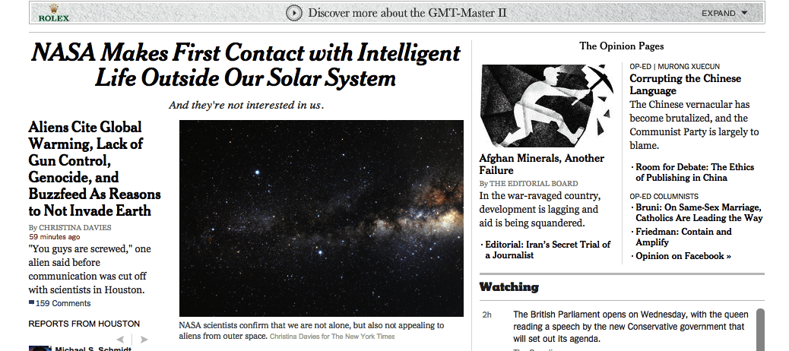
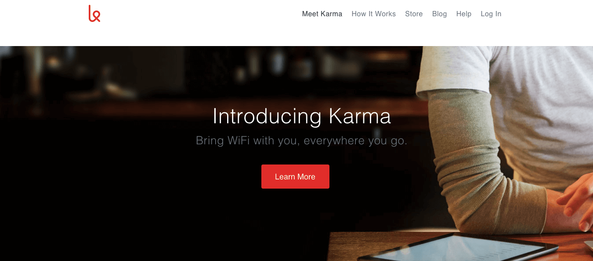

Front-End Web Developer
I'm a web developer in-training and English teacher based in Seoul, South Korea. I've lived here for 3 years and loved every minute of learning and growing in this beautiful country. I'm now working on entering the world of Front-End Web Development with help from my mentor and peers at Thinkful.
As I wrap up my last year of teaching, I'm looking forward to acquiring new skills in Web Development and pursuing a career which will nurture my love for technology and design.
This project required using Chrome Developer Tools and knowledge of HTML to alter the content of the New York Times' homepage.
For this project, I designed and coded a static landing page with a wireframe and user experience defined by the small business Karma.
